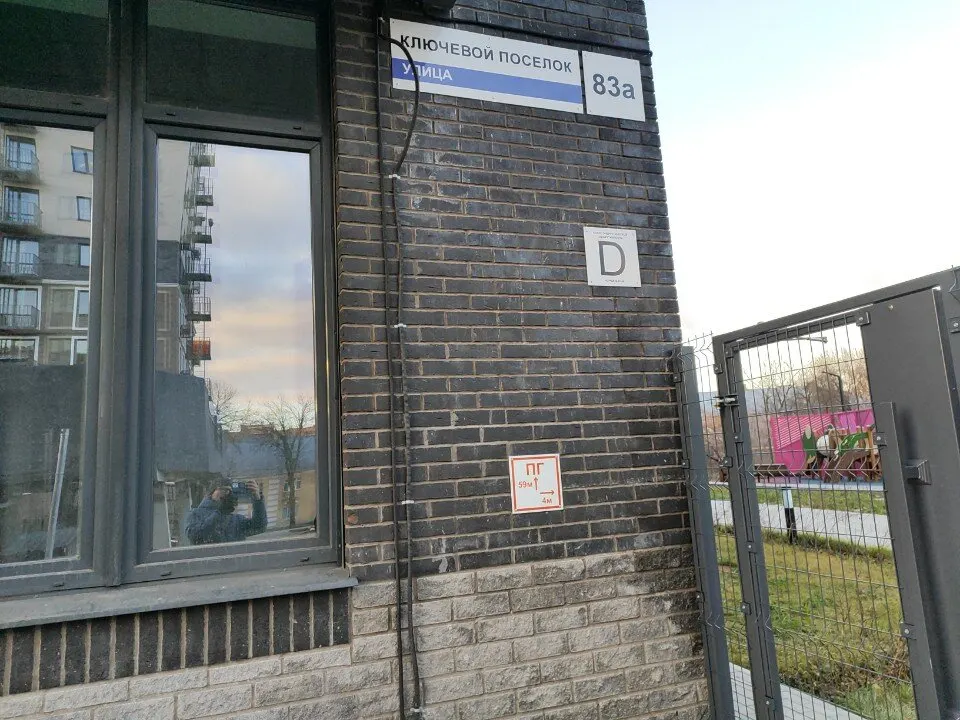
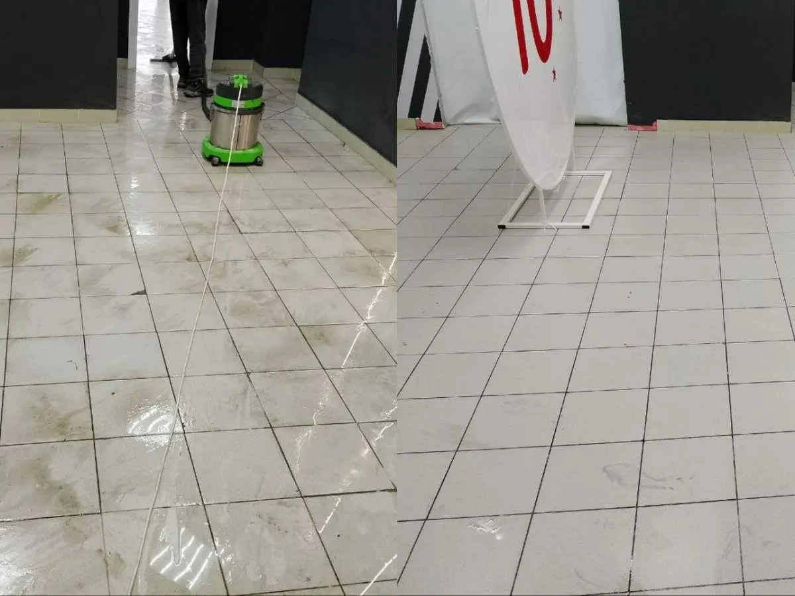
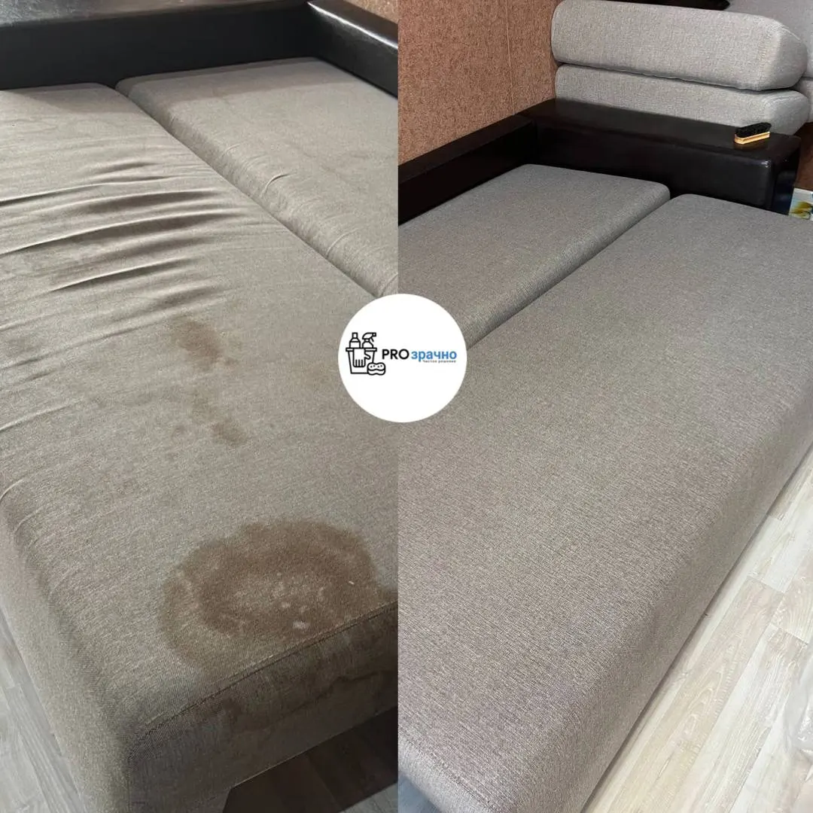
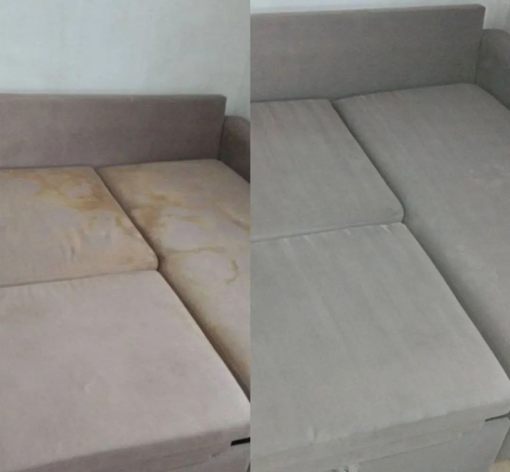

Клининговая компания · Ижевск
Уборка, химчистка мебели и мойка фасадов в Ижевске
Генеральная уборка и уборка после ремонта, химчистка диванов, матрасов и ковров, мойка окон и фасадов на высоте до 20 метров.
- Химчистка на дому, выезд на дом
- Гарантия и безопасные средства

Что делаем
Входит
- Генеральная уборка и уборка после ремонта
- Химчистка диванов, матрасов, стульев, кресел и ковров
- Мойка окон и витрин, мойка фасадов на высоте до 20 метров
- Химчистка мягкой мебели на дому, выезд на дом
- Уборка квартир, домов, офисов, магазинов и фитнес-клубов
Отдельно, если нужно
- Состав работ по каждой услуге подтверждает менеджер
Цены на услуги
Цены из карточки компании на Яндекс.Картах. Точную сумму назовёт менеджер после уточнения объёма работ.
Уборка
- Уборка любой сложности: генеральная, после ремонта150 ₽ <<запросить у заказчика>>
Химчистка и фасады
- Химчистка мебели и ковров: диваны, матрасы, стулья, кресла, ковры400 ₽ за шт.
- Высотная мойка фасадов: без разводов, очищенной водой, до 20 метров100 ₽ <<запросить у заказчика>>
Цены на карточке давно не обновлялись, итоговую сумму подтверждает менеджер.
Как проходит
- 01
Заявка
Звоните или пишете во ВКонтакте: называете адрес и задачу.
- 02
Объём и цена
Согласуем объём работ и стоимость.
- 03
Приезд
Приезжаем на объект, при химчистке мебели можем работать у вас дома.
- 04
Результат
Принимаете чистое помещение и чистую мебель.



Что отмечают клиенты
Быстро и качественно
Так пишет клиент в отзыве на Яндекс.Картах.
Химчистка, после которой диван как новый
Клиентка в отзыве пишет, что диван вернулся чистым, а подушки встали на место.
Безопасные средства
Указано на карточке компании.
Отзывы с Яндекс.Карт
«Лучшая компания по химчистке! Диванчик чувствует себя отлично!! Мы в восторге от его чистоты, а он в восторге что наконец-то его помыли! Подушки вернулись на свои места! Будем обращаться ещё!»
Любовь Аликина · 4 августа 2025
«Хорошие парни помыли быстро и качественно»
Никита Астахов · 3 августа 2025
Отзывы с карточки на Яндекс.Картах, без правок.
Частые вопросы
Какие услуги у вас есть?
Генеральная уборка и уборка после ремонта, химчистка мебели и ковров, мойка окон, витрин и фасадов.
Чистите мебель на дому?
Да, на карточке указаны химчистка на дому и выезд на дом.
Есть ли гарантия?
На карточке компании указана гарантия. Условия уточняйте у менеджера.
Как с вами связаться?
Позвоните или напишите нам во ВКонтакте: vk.ru/prozrachnoklining.
Напишите нам – назовём цену и свободное время
- Адрес
- ул. Ключевой Посёлок, 83А, Ижевск
- Часы
- <<график работы: запросить у заказчика>>
- Телефон
- +7 (982) 837-94-20